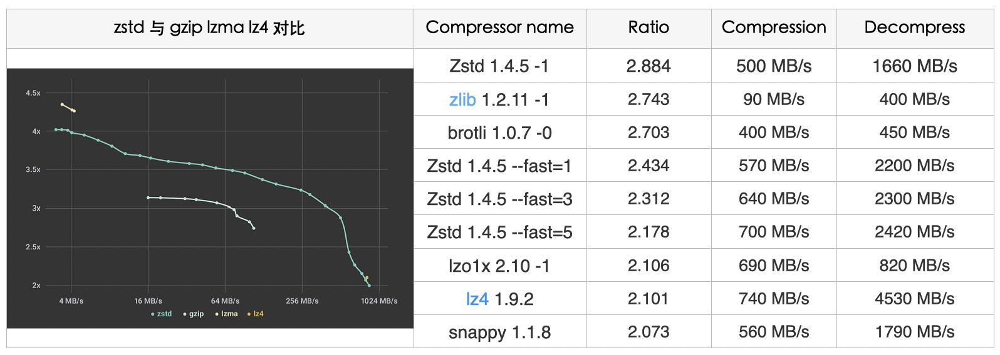

关于压缩算法的选择和使用场景
看了两篇关于压缩算法选择和使用场景的文章：
速度与压缩比如何兼得？压缩算法在构建部署中的优化 - 美团技术团队 https://tech.meituan.com/2021/01/07/pack-gzip-zstd-lz4.html
Zstandard: How Facebook increased compression speed - Facebook Engineering https://engineering.fb.com/2018/12/19/core-data/zstandard/
美团那篇文章的应用场景在于部署二进制包，他们使用场景不是使用API，而是直接使用工具对包进行压缩和解压。在这个场景下面对于多线程就非常敏感了，而在开发系统里面使用压缩解压则比较少考虑多线程，因为系统有自己的线程规划安排。
另外就是压缩算法选择上需要考虑几点：
- 压缩比例
- 压缩和解压速度
- 可调参性
关于可调参性我以前没有考虑过，可以看下面这张图。lzma和lz4分别在左上和右下角，lzma压缩比例高，但是速度慢；lz4压缩比例低，但是速度快。但是中间那段光谱却没有办法覆盖，zlib也只是覆盖到了其中一个部分。这就意味着，zstd可以适用于广泛的场景，而不必在考虑其他算法（不考虑兼容性的话）

FB那篇文章则提到了如何在生产环境中使用zstd，提到了zstd的几个特点：
- 多线程压缩解压
- long-range mode 可以在非常大的区域查找可压缩串
- 自适应，根据IO读写速度
- 字典压缩，可以训练字典，然后传入训练数据
- managed compression. 可以认为整个压缩服务化了